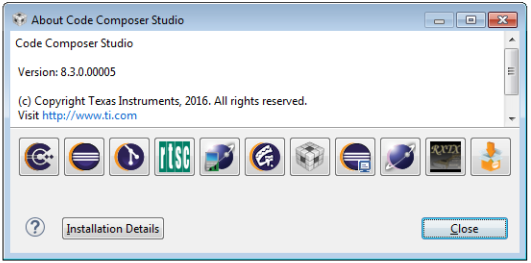
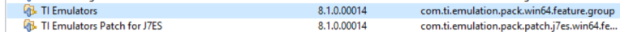
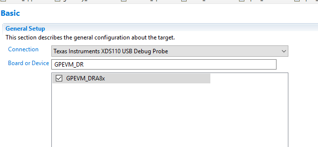
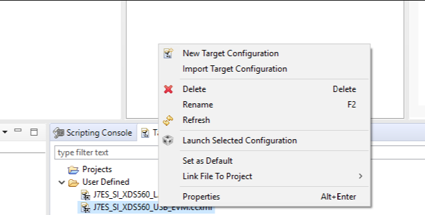
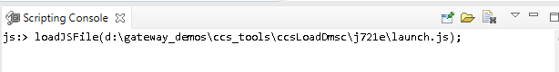
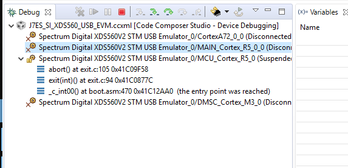
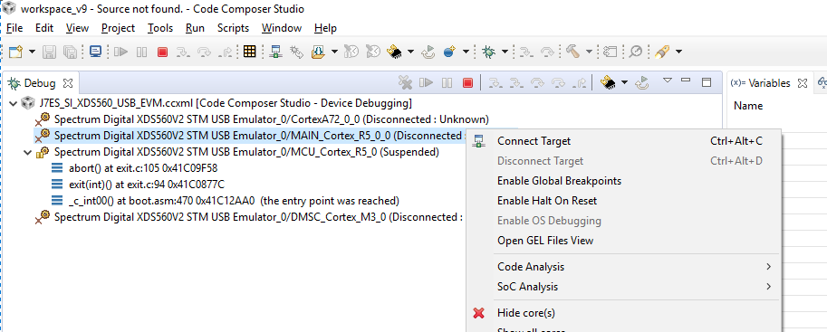
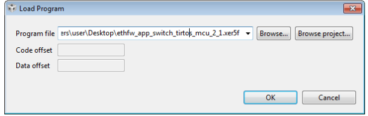

|
Ethernet Firmware
|
|
Ethernet Firmware
|
Code Composer Studio is an integrated development environment (IDE) that supports TI's Micro controller and Embedded Processors portfolio. It provides useful tools to develop and debug embedded applications.
Please visit Code Composer Studio product page for more information or visit the CCS Downloads page.
Supported CCS version for J721E EVM is 9.0.1.00004 as shown below.

Install the CCS Emulation Packs for J721E. After installation the following versions should be listed


Note: Please configure EVM in NOBOOT mode for connecting and loading binaries via CCS. As EthFw demos are run via CCS, please configure J721E EVM in NOBOOT mode.
Open Code Composer Studio and launch the Target Configuration previously setup

Run the launch.js script located in the pdk_xx_xx_xx/packages/ti/drv/sciclient/tools/ccsLoadDmsc/j721e/ on scripting console to load and execute DMSC firmware binary. This step can take considerable time as it configures PLL etc. in the SOC via GEL files and configures DDR.

After script completes execution you should see below in Debug window

In Code Composer Studio, select MAIN_Cortex_R5_0_0 from the list of cores in the Debug panel

In the Load Program window, browse the EthFw Layer-2 switching application binary.

 1.8.13
1.8.13